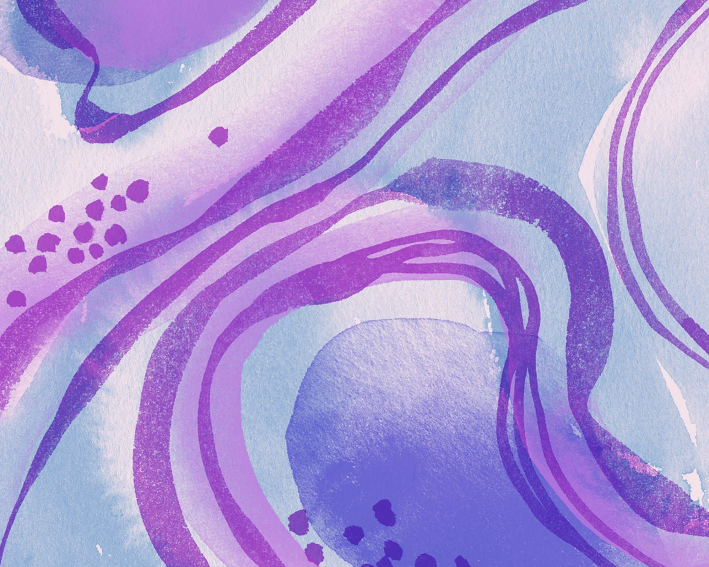
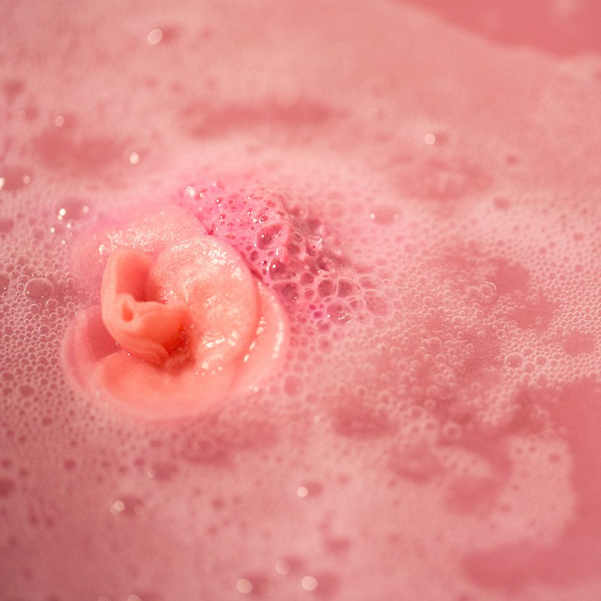
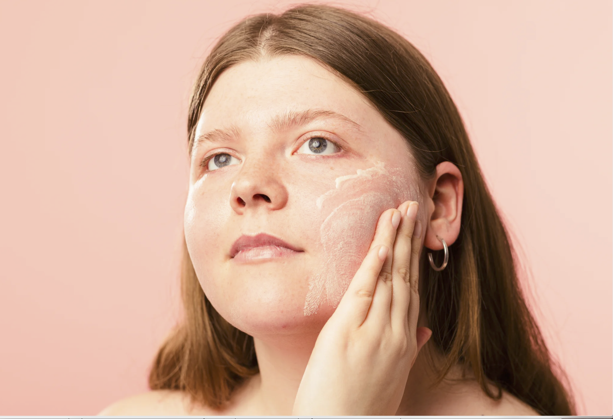

Lush revoluciona la hora del baño con bombas que cuentan historias sensoriales.
Las bombas de baño de Lush no solo llenan la bañera de colores vibrantes y aromas envolventes, sino que ahora cuentan con diseños y fórmulas que narran historias únicas, transportando a los usuarios a mundos de fantasía, naturaleza o relajación profunda, convirtiendo cada baño en una experiencia multisensorial irrepetible. Saber más

Las bombas de baño más populares de la temporada.
Una guía con las bombas de baño más vendidas y recomendadas por nuestros clientes. Desde fórmulas relajantes hasta opciones energizantes, encuentra la bomba de baño perfecta para ti. Saber más

Dale color y magia a tu rutina de cuidado personal.
Exploramos cómo los colores, los brillos y las burbujas de las bombas de baño influyen en tu estado de ánimo. Descubre por qué cada color tiene un propósito especial en el cuidado personal. Saber más